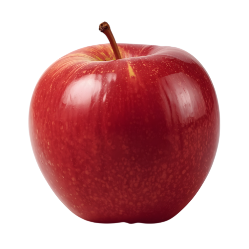
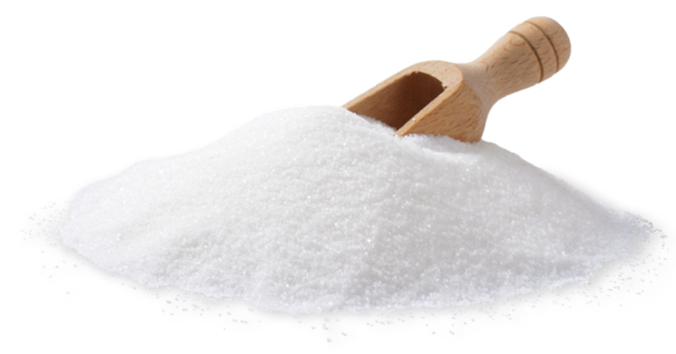
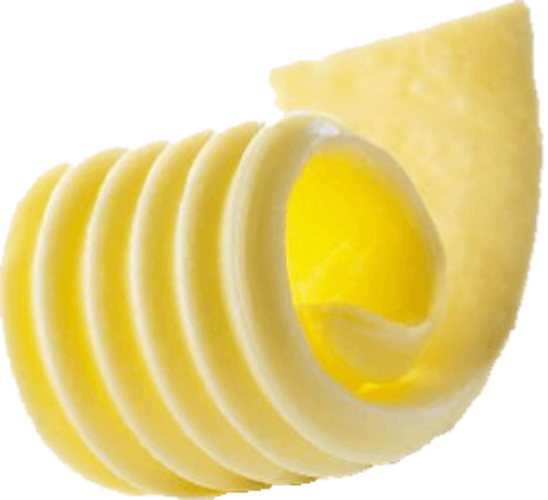
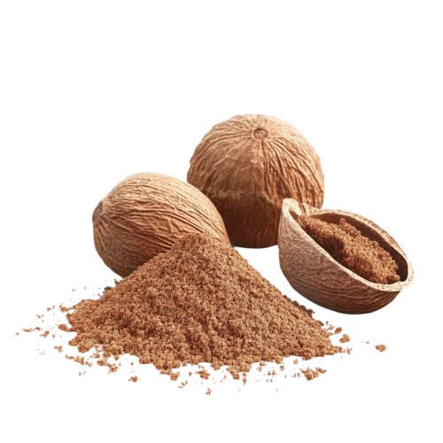

Who am I?
Hi! I'm Emiliano Franco, and I love apple pie. I have been tasting and rating apple pies for a long time, but now I wish to share my experience tasting this beautiful dessert. This website shares my honest reviews to help you discover the best apple pies, as well as a bit of history about this dessert.
About me
My love for apple pie started when I was young. I disliked many candies, cakes, and desserts when I was young, until I found this dessert and fell in love with it. Ever since I was 6 years old, I always had an apple pie as a replacement for my birthday cake.

Most Common Ingredients




- Apple
- Cinnamon
- Sugar
- Butter
- Nutmeg